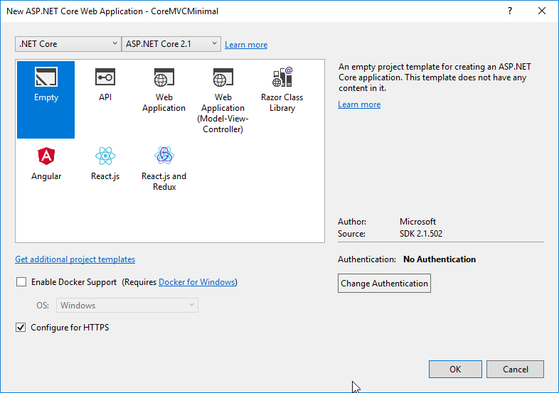

Sometimes I want a very minimal setup, when trying out new things. Below will creates such a project (Built with ASP.Net Core 2.1).
Steps
- Create a new Empty AST.NET Core Web Application

Install MVC nuget package
Microsoft.AspNetCore.MvcNote: make sure the version major.minor match the project version. In this case
project --> 2.1
nuget package --> 2.1.3
Modify Startup.cs
- add
services.AddMvc();toConfigureServices - optionally add this to
Configureelse { app.UseExceptionHandler("/Home/Error"); app.UseHsts(); } app.UseHttpsRedirection(); app.UseStaticFiles(); app.UseCookiePolicy(); - Replace
app.Run(async (context) => { await context.Response.WriteAsync("Hello World!"); });
with the following.
app.UseMvc(routes =>
{
routes.MapRoute(
name: "default",
template: "{controller=Home}/{action=Index}/{id?}");
});
Add Controllers
- Create new folder Controllers
- Create a new
HomeController
Add View
- Click on
Add View...on the controller action. Uncheck theUse layout page.